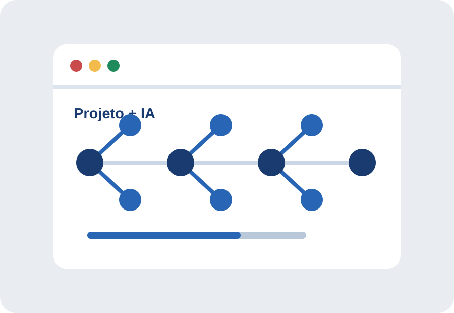

03 / Projetos
IA no Desenvolvimento de Projetos
Use a IA para abrir caminhos, organizar o trabalho e encontrar problemas mais cedo. A visão, as prioridades e a responsabilidade pelo resultado continuam humanas.

Um processo com revisão
Da pergunta ao resultado
- Construção de ideiasPeça alternativas, públicos possíveis e perguntas que ainda não foram feitas.
- PlanejamentoTransforme um objetivo em etapas, entregáveis, dependências e critérios de sucesso.
- Organização de tarefasConverta etapas em uma lista priorizada e ajuste-a aos recursos reais da equipe.
- Pesquisa e desenvolvimentoCompare fontes, resuma documentos e explore referências sem tratar a saída como prova.
- Programação e identificação de errosSolicite explicações, casos de teste e hipóteses de falha; execute e revise tudo no ambiente correto.
- AperfeiçoamentoPeça críticas sobre clareza, acessibilidade e coerência. A escolha final deve considerar pessoas e contexto.
Exemplos de prompts que preservam autoria
Um bom prompt não pede apenas um produto final. Ele informa o objetivo, delimita o que a ferramenta pode fazer e exige que o raciocínio seja explicado para que a pessoa possa avaliar.
“Atue como revisor de plano de projeto. Liste riscos,
perguntas em aberto e dependências. Não reescreva o plano
ainda; explique por que cada ponto merece atenção.”
“Analise este trecho de código e sugira três testes que
possam revelar erros. Explique o que cada teste verifica. Não
altere o código.”
Decisão humana
A IA pode gerar opções e apontar padrões. Ela não conhece sozinha os compromissos, os valores, os usuários afetados ou a responsabilidade legal da equipe.